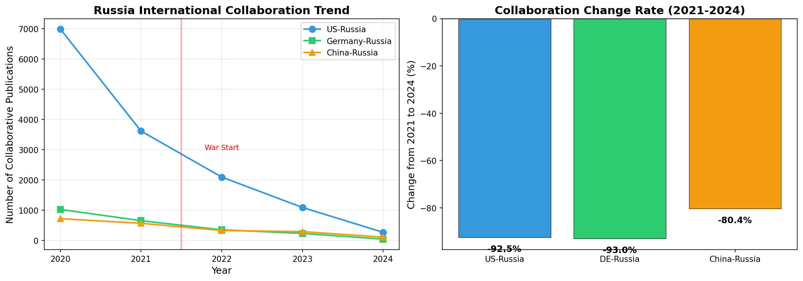
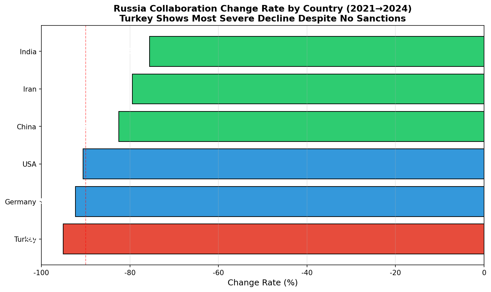

What is Traditional
Business Intelligence?
BI helps organizations turn raw data into actionable insights. It works beautifully — when you already know exactly what question to ask.

BI in Action: Russia-Ukraine
& Russian Academia
"What is the impact of the Russia-Ukraine conflict on Russian scientific research?"
Count Russian publications over time. Found a steep decline starting 2022.

Add funding data. The European Commission stopped funding Russian projects after 2022.

Add a second organization layer. Compared EC support for Russia vs. Ukraine.
Russian Academic Output
Has Collapsed
Is this a global trend? No. US and Germany declined ~27.6%, while China grew +14.8%. Russia's extra ~20pp decline is war-specific.
The decline is accelerating. YoY: -6.0% (2022), -4.8% (2023), then -39.4% in 2024 — cumulative, compounding effects.


International Collaboration
Nearly Collapsed


Collaboration didn't just decline — it nearly vanished. International co-authorship, once a lifeline for Russian science, has been severed with virtually all major partners.
The Turkey Surprise
A non-Western country with no sanctions against Russia dropped more than the sanctioning countries.


This proves sanctions alone cannot explain the collapse. The fundamental driver is academic platform isolation — international databases reduced visibility of Russian papers, affecting collaboration with ALL countries.
What If BI Could
Evolve With Your
Thinking?
Instead of one-shot analysis, exploration should be iterative — each insight naturally leads to the next, better question.

From Paper I: analysis becomes cumulative rather than repetitive.
NeuGBI in Action on Lark
Three stages of interaction, from schema exploration to the final report.

"Show me the schema" — the system presents the data structure and scale.

The agent spawns subagents for root cause analysis and builds the report structure.

A complete analysis report with key findings, executive summary, and causal analysis.
Ready to Explore?
We have packaged the entire environment. Scan the QR code or visit the link below to get started.

Dataset, demo system, and synthesized reports — all included.
Thank You
Questions & Discussion